- 01 架构的演进.md.html
- 02 Serverless 的价值.md.html
- 03 常见 Serverless 架构模式.md.html
- 04 Serverless 技术选型.md.html
- 05 函数计算简介.md.html
- 06 函数计算是如何工作的？.md.html
- 07 函数粘合云服务提供端到端解决方案.md.html
- 08 函数计算的开发与配置.md.html
- 09 函数的调试与部署.md.html
- 10 自动化 CI&CD 与灰度发布.md.html
- 11 函数计算的可观测性.md.html
- 12 典型案例 1：函数计算在音视频场景实践.md.html
- 13 典型案例 3：十分钟搭建弹性可扩展的 Web API.md.html
- 14 Serverless Kubernetes 容器服务介绍.md.html
- 15 Serverless Kubernetes 应用部署及扩缩容.md.html
- 16 使用 Spot 低成本运行 Job 任务.md.html
- 17 低成本运行 Spark 数据计算.md.html
- 18 GPU 机器学习开箱即用.md.html
- 19 基于 Knative 低成本部署在线应用，灵活自动伸缩.md.html
- 20 快速构建 JenkinsGitlab 持续集成环境.md.html
- 21 在线应用的 Serverless 实践.md.html
- 22 通过 IDEMaven 部署 Serverless 应用实践.md.html
- 23 企业级 CICD 工具部署 Serverless 应用的落地实践.md.html
- 24 Serverless 应用如何管理日志&持久化数据.md.html
- 25 Serverless 应用引擎产品的流量负载均衡和路由策略配置实践.md.html
- 26 Spring CloudDubbo 应用无缝迁移到 Serverless 架构.md.html
- 27 SAE 应用分批发布与无损下线的最佳实践.md.html
- 28 如何通过压测工具+ SAE 弹性能力轻松应对大促.md.html
- 29 SAE 极致应用部署效率.md.html
19 基于 Knative 低成本部署在线应用，灵活自动伸缩
为什么需要 Knative

Serverless 已经是万众期待，未来可期的状态。各种调查报告显示企业及开发者已经在使用 Serverless 构建线上服务，而且这个比例还在不断增加。
在这个大趋势下，我们再来看 IaaS 架构的演进方向。最初企业上云都是基于 VM 的方式在使用云资源，企业线上服务都是通过 Ansible、Saltstack、Puppet 或者 Chef 等工具裸部在 VM 中的。直接在 VM 中启动应用，导致线上服务对 VM 的环境配置有很强的依赖，而后伴随着容器技术的崛起，大家开始通过容器的方式在 VM 中部署应用。
但如果有十几个甚至几十个应用需要部署，就需要在成百上千的 VM 快速部署、升级应用，这是一件非常令人头疼的事情。而 Kubernetes 很好地解决了这些问题，所以现在大家开始通过 Kubernetes 方式使用云资源。随着 Kubernetes 的流行，各大云厂商都开始提供 Serverless Kubernetes 服务，用户无需维护 Kubernetes 集群，即可直接通过 Kubernetes 语义使用云的能力。
既然 Kubernetes 已经非常好了，为什么还需要 Knative 呢？要回答这个问题，我们先梳理一下 Serverless 应用都有哪些共同特质：
- 按需使用，自动弹性
按需使用云资源，业务量上涨的时候自动扩容，业务量下降的时候自动缩容，所以需要自动弹性能力。
- 灰度发布
要能支持多版本管理，应用升级的时候可以使用各种灰度发布策略上线新的版本。
- 流量管理
能够管理南北流量，可以按照流量百分比对不同版本进行灰度。
- 负载均衡、服务发现
应用弹性过程中自动增加或者减少实例数量，流量管理需要具备负载均衡和服务发现的功能。
- Gateway
多个应用部署在同一个集群中，需要一个接入层网关对多个应用以及同一个应用的不同版本进行流量的管理。
随着 Kubernetes 和云原生概念的崛起，第一直觉可能是直接在 Kubernetes 之上部署 Serverless 应用。那么，如果要在原生的 Kubernetes 上部署 Serverless 应用我们可能会怎么做？
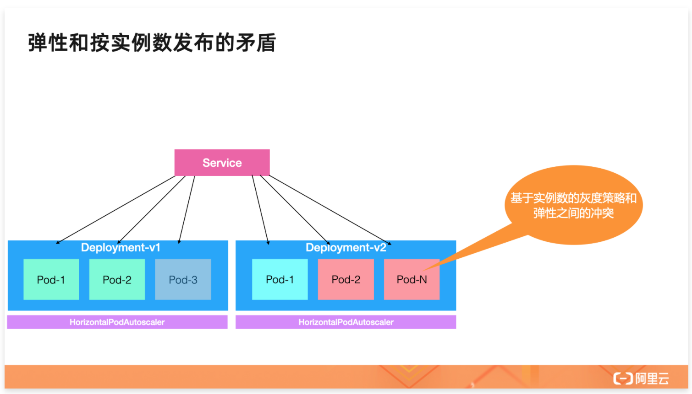
首先需要一个 Deployment 来管理 Workload，还需要通过 Service 对外暴露服务和实现服务发现的能力。应用有重大变更，新版本发布时可能需要暂停观察，待观察确认没问题之后再继续增加灰度的比例。这时就要使用两个 Deployment 才能做到。
v1 Deployment 代表旧版本，灰度的时候逐一减少实例数；v2 Deployment 代表新版本，灰度的时候逐一增加实例数。hpa 代表弹性能力，每一个 Deployment 都有一个 hpa 管理弹性配置。
这其中其实是有冲突的：假设 v1 Deploymen 原本有三个 pod，灰度的时候升级一个 pod 到 v2，此时其实是 1/3 的流量会打到 v2 版本上。但当业务高峰到来后，因为两个版本都配置了 hpa，所以 v2 和 v1 会同时扩容，最终 v1 和 v2 的 pod 数量就不是最初设置的 1/3 的比例了。
所以传统的这种按照 Deployment 实例数发布的灰度策略和弹性配置天然是冲突的。而如果按照流量比例进行灰度就不会有这个问题，这可能就要引入 Istio 的能力。
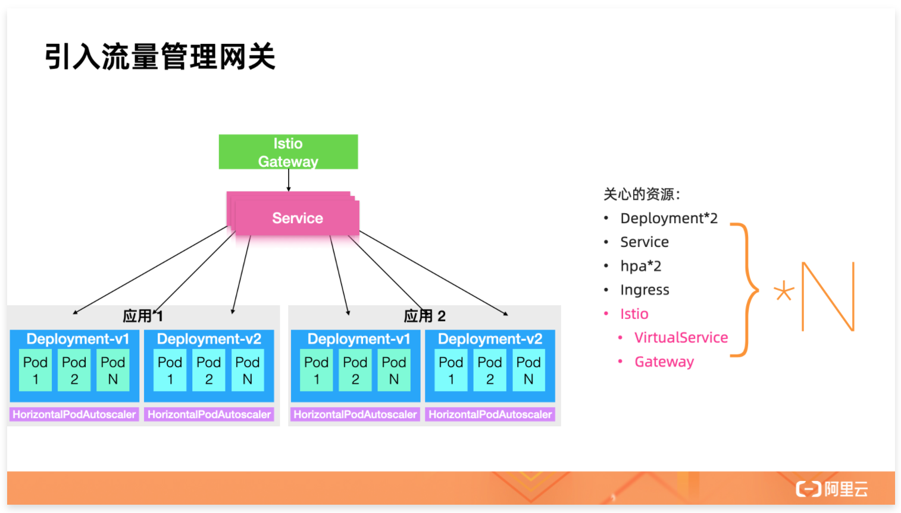
引入 Istio 作为 Gateway 组件，Istio 除了管理同一个应用的流量灰度，还能对不同的应用进行流量管理。看起来很好，但是我们再仔细分析一下存在什么问题。先梳理一下在原生 K8s 之上手动管理 Serverless 应用都需要做什么：
- Deployment
- Service
- HPA
- Ingress
- Istio
- VirtualService
- Gateway
这些资源是每一个应用维护一份，如果是多个应用就要维护多份。这些资源散落在 K8s 内，根本看不出来应用的概念，另外管理起来也非常繁琐。
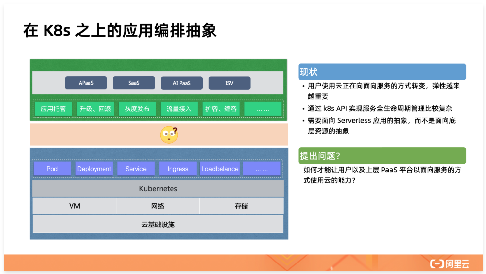
Serverless 应用需要的是面向应用的管理动作，比如应用托管、升级、回滚、灰度发布、流量管理以及弹性等功能。而 Kubernetes 提供的是 IaaS 的使用抽象。所以 Kubernetes 和 Serverless 应用之间少了一层应用编排的抽象。
而 Knative 就是建立在 Kubernetes 之上的 Serverless 应用编排框架。除了 Knative 以外，社区也有好几款 FaaS 类的编排框架，但这些框架编排出来的应用没有统一的标准，每一个框架都有一套自己的规范，而且和 Kubernetes API 完全不兼容。不兼容的 API 就导致使用难度高、可复制性不强。云原生的一个核心标准就是 Kubernetes 的 API 标准，Knative 管理的 Serverless 应用保持 Kubernetes API 语义不变。和 Kubernetes API 具有良好的兼容性，就是 Knative 的云原生特性所在。
Knative 是什么？
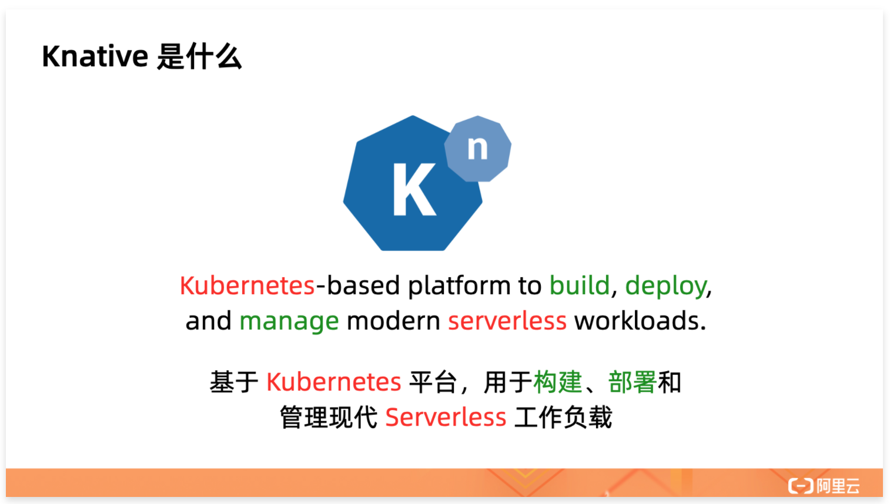
Knative 主要解决的问题就是在 Kubernetes 之上提供通用的 Serverless 编排、调度服务，给上层的 Serverless 应用提供面向应用层的原子操作。并且通过 Kubernetes 原生 API 暴露服务 API，保持和 Kubernetes 生态工具链的完美融合。Knative 有 Eventing 和 Serving 两个核心模块，本文主要介绍 Serving 的核心架构。
Knative Serving 简介
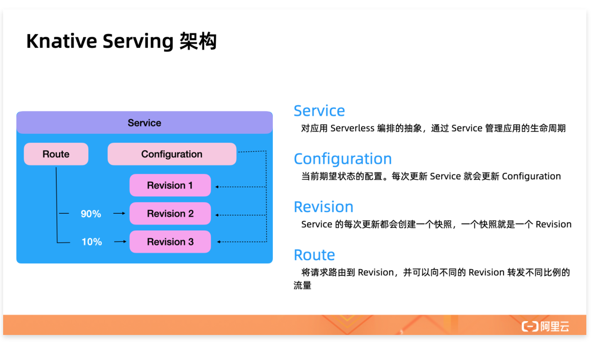
Serving 核心是 Knative Service，Knative Controller 通过 Service 的配置自动操作 Kubernetes Service 和 Deployment，从而实现简化应用管理的目标。
Knative Service 对应一个叫做 Configuration 的资源，每次 Service 变化如果需要创建新的 Workload 就更新 Configuration，然后每次 Configuration 更新都会创建一个唯一的 Revision。Revision 可以认为是 Configuration 的版本管理机制。理论上 Revision 创建完以后是不会修改的。
Route 主要负责 Knative 的流量管理，Knative Route Controller 通过 Route 的配置自动生成 Knative Ingress 配置，Ingress Controller 基于 Ingress 策略实现路由的管理。
Knative Serving 对应用 Workload 的 Serverless 编排是从流量开始的。流量首先达到 Knative 的 Gateway，Gateway 根据 Route 的配置自动把流量根据百分比拆分到不同的 Revision 上，然后每一个 Revision 都有一个自己独立的弹性策略。当过来的流量请求变多时，当前 Revision 就开始自动扩容。每一个 Revision 的扩容策略都是独立的，相互不影响。
基于流量百分比对不同的 Revision 进行灰度，每一个 Revision 都有一个独立的弹性策略。Knative Serving 通过对流量的控制实现了流量管理、弹性和灰度三者的完美结合。接下来具体介绍一下 Knative Serving API 细节。
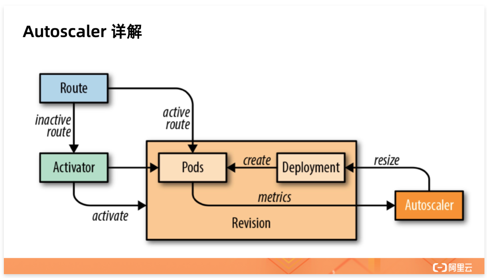
上图展示了 Knative Autoscaler 的工作机制，Route 负责接入流量，Autoscaler 负责做弹性伸缩。当没有业务请求时会缩容到零，缩容到零后 Route 进来的请求会转到 Activator 上。当第一个请求进来之后 Activator 会保持住 http 链接，然后通知 Autoscaler 去做扩容。Autoscaler 把第一个 pod 扩容完成以后 Activator 就把流量转发到 Pod，从而做到了缩容到零也不会损失流量的目的。
到此 Knative Serving 的核心模块和基本原理已经介绍完毕，你应该对 Knative 已经有了初步了解。在介绍原理的过程中你可能也感受到了，要想把 Knative 用起来其实还是需要维护很多 Controller 组件、Gateway 组件（比如 Istio)）的，并且要持续地投入 IaaS 成本和运维成本。
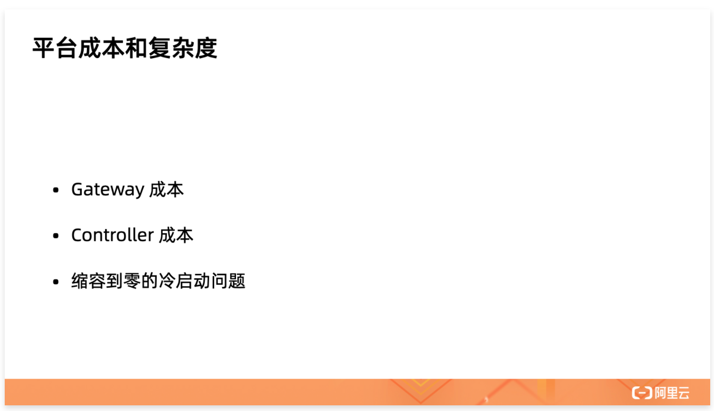
Gateway 组件假设使用 istio 实现的话，Istio 本身就需要十几个 Controller，如果要做高可用可能就需要二十几个 Controller。Knative Serving Controller 全都高可用部署也需要十几个。这些 Controller 的 IaaS 成本和运维成本都比较多。另外冷启动问题也很明显，虽然缩容到零可以降低业务波谷的成本，但是第一批流量也可能会超时。
Knative 和云的完美融合
为了解决上述问题，我们把 Knative 和阿里云做了深度的融合。用户还是按照 Knative 的原生语义使用，但底层的 Controller 、Gateway 都深度嵌入到阿里云体系内。这样既保证了用户可以无厂商锁定风险地以 Knative API 使用云资源，还能享受到阿里云基础设施的已有优势。
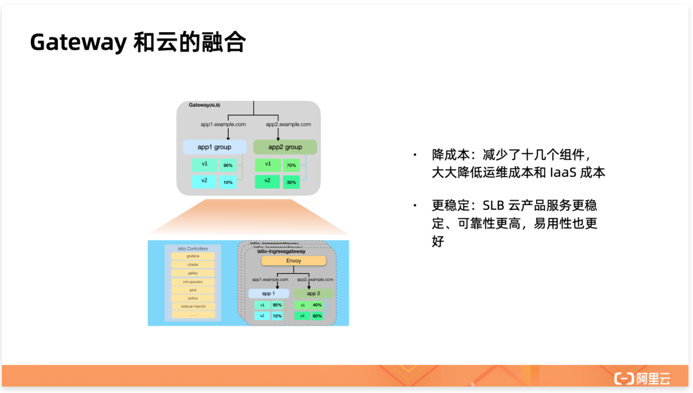
首先是 Gateway 和云的融合，直接使用阿里云 SLB 作为 Gateway，使用云产品 SLB 的好处有：
- 云产品级别的支撑，提供 SLA 保障；
- 按需付费，不需要出 IaaS 资源；
- 用户无需承担运维成本，不用考虑高可用问题，云产品自带高可用能力。
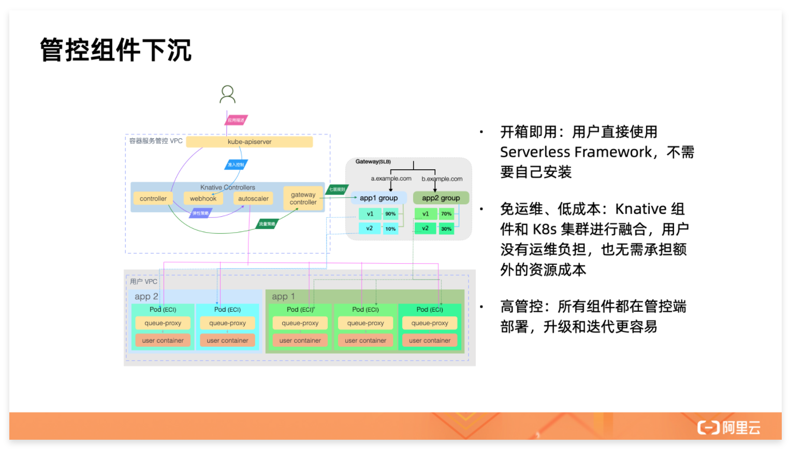
除了 Gateway 组件以外，Knative Serving Controller 也需要一定的成本，所以我们把 Knative Serving Controller 和阿里云容器服务也进行了融合。用户只需要拥有一个 Serverless Kubernetes 集群并开通 Knative 功能就可以基于 Knative API 使用云的能力，并且用户无需为 Knative Controller 付出任何成本。
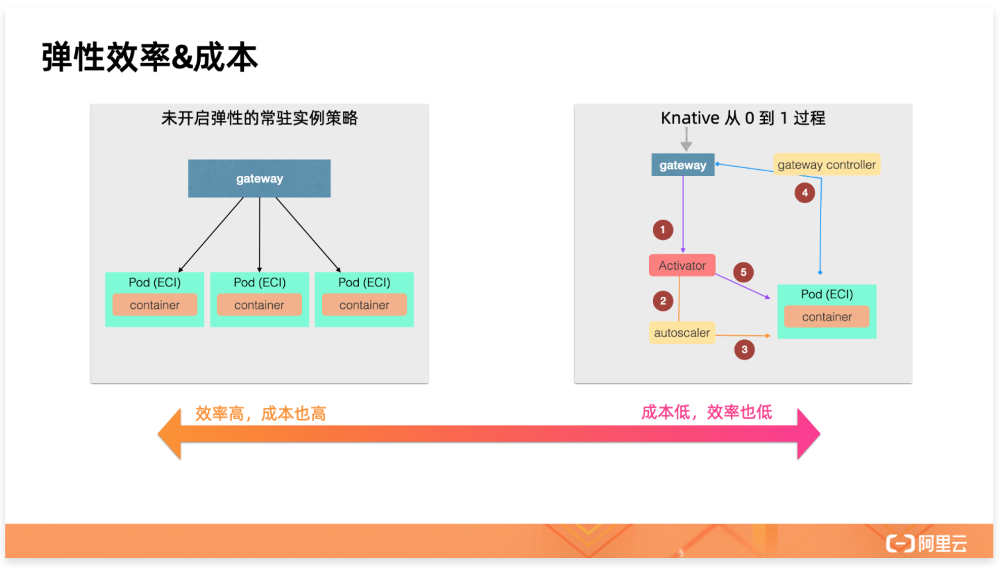
接下来再分析一下冷启动问题。
传统应用在没开启弹性配置的时候实例数是固定的，Knative 管理的 Serverless 应用默认就有弹性策略，在没有流量的时候会缩容到零。传统应用在流量低谷时即便没有业务请求处理，实例数还保持不变，这其实是浪费资源的。但好处就是请求不会超时，什么时候过来的请求都可以会很好地处理。而如果缩容到零，第一个请求到达以后才会触发扩容的过程。
Knative 的模型中从 0 到 1 扩容需要 5 个步骤串行进行，这 5 个步骤都完成以后才能开始处理第一个请求，而此时往往都会超时。所以 Knative 缩容到零虽然降低了常驻资源的成本，但第一批请求的冷启动问题也非常明显。可见弹性其实就是在寻找成本和效率的一个平衡点。
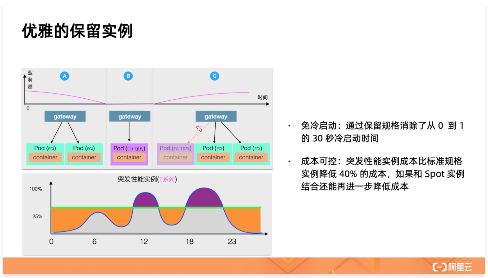
为了解决第一个实例的冷启动问题，我们推出了保留实例功能。保留实例是阿里云容器服务 Knative 独有的功能。社区的 Knative 默认在没有流量时缩容到零，但是缩容到零之后从 0 到 1 的冷启动问题很难解决。冷启动除了要解决 IaaS 资源的分配、Kubernetes 的调度、拉镜像等问题以外，还涉及到应用的启动时长。应用启动时长从毫秒到分钟级别都有。应用启动时间完全是业务行为，在底层平台层面几乎无法控制。
ASK Knative 对这个问题的解法是通过低价格的保留实例，来平衡成本和冷启动问题。阿里云 ECI 有很多规格，不同规格的计算能力不一样，价格也不一样。如下所示是对 2c4G 配置的计算型实例和突发性能型实例的价格对比。

通过上图可知突发性能实例比计算型便宜 46%，可见如果在没有流量时，使用突发性能实例提供服务不单单解决了冷启动的问题，还能节省很多成本。
突发性能实例除了价格优势以外，还有一个非常亮眼的功能就是 CPU 积分。突发性能实例可以利用 CPU 积分应对突发性能需求。突发性能实例可以持续获得 CPU 积分，在性能无法满足负载要求时，可以通过消耗积累的 CPU 积分无缝提高计算性能，不会影响部署在实例上的环境和应用。通过 CPU 积分，您可以从整体业务角度分配计算资源，将业务平峰期剩余的计算能力无缝转移到高峰期使用（简单的理解就是油电混动）。突发性能实例的更多细节参见这里。
所以 ASK Knative 的策略是在业务波谷时使用突发性能实例替换标准的计算型实例，当第一个请求来临时再无缝切换到标准的计算型实例。这样可以降低流量低谷的成本，并且在低谷时获得的 CPU 积分，还能在业务高峰到来时消费掉，用户支付的每一分钱都不会浪费。
使用突发性能实例作为保留实例只是默认策略，用户可以指定自己期望的其他类型实例作为保留实例的规格。当然用户也可以指定最小保留一个标准实例，从而关闭保留实例的功能。
总结
Knative 是 Kubernetes 生态最流行的 Serverless 编排框架。社区原生的 Knative 需要常驻的 Controller 和常驻的网关才能提供服务。这些常驻实例除了需要支付 IaaS 成本以外还带来了很多运维负担，给应用的 Serverless 化带来了一定的难度，因此我们在 ASK 中完全托管了 Knative Serving，开箱即用极致的 Serverless 体验。